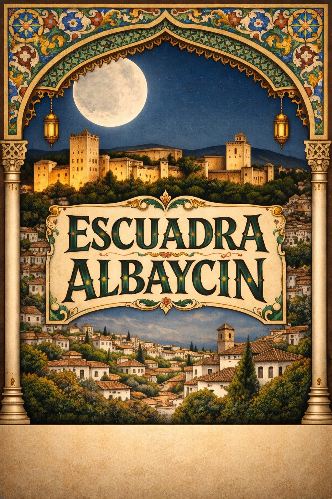
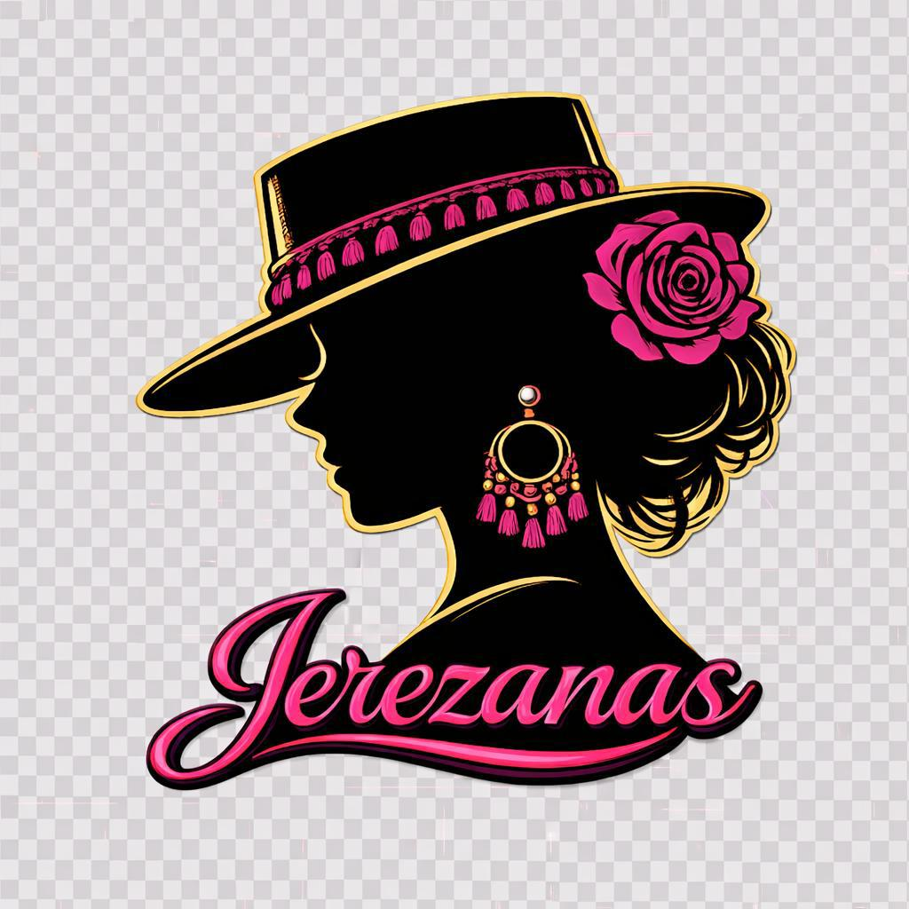
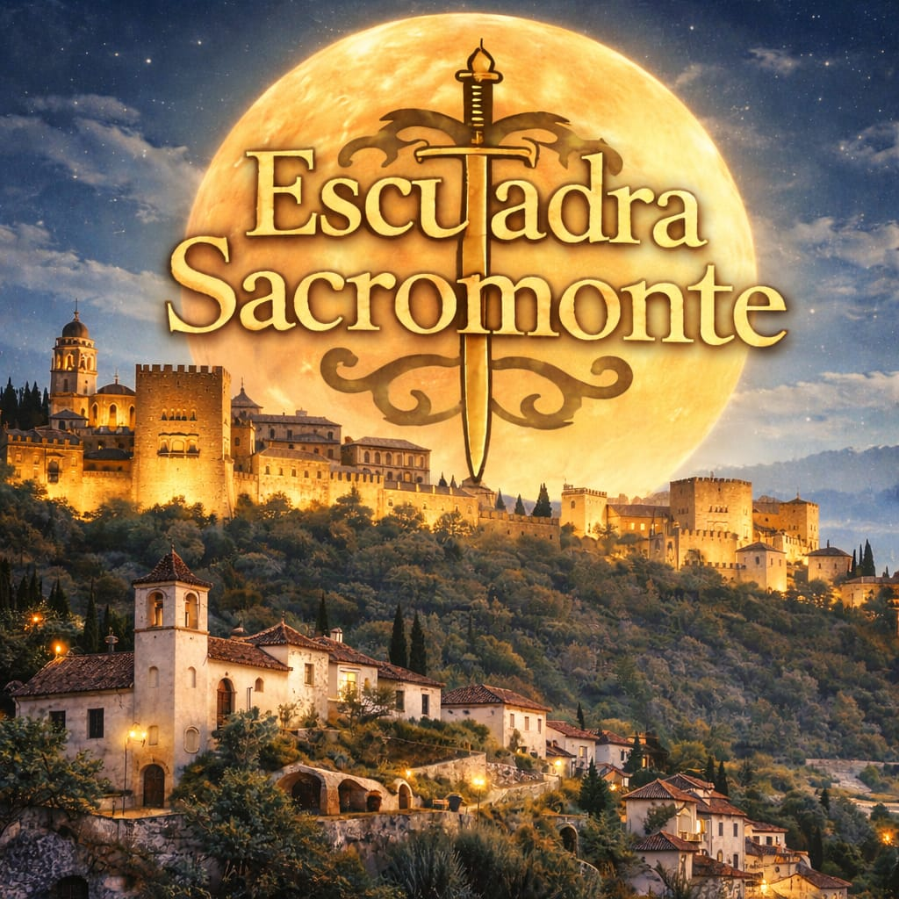
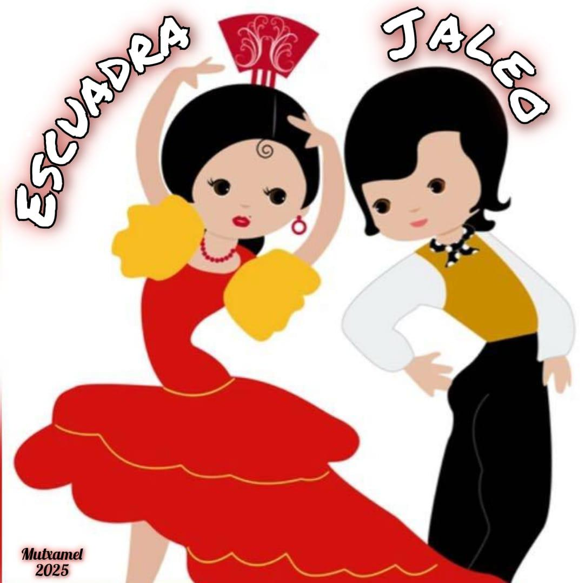
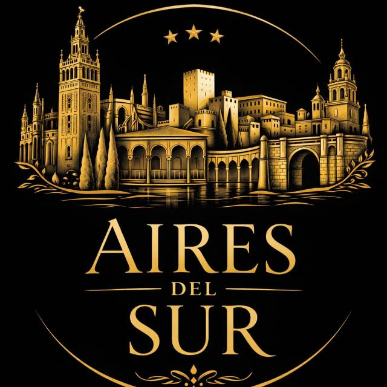

Nuestras Escuadras
Escuadra Albaycín

Albaycín es un grupo cristiano que lleva con orgullo el nombre del histórico barrio granadino, símbolo de cultura, tradición y belleza. Inspirada en las calles empedradas, los miradores y la esencia andaluza, esta escuadra destaca por su unión, su fuerza y su pasión en cada desfile. Sus componentes, como una auténtica familia, defienden la hermandad, el respeto y el compañerismo, haciendo de cada acto una muestra de elegancia, disciplina y amor por las fiestas. El Albaycín no es solo un nombre, es un sentimiento que se lleva en el corazón y se muestra con honor en cada paso.
Leer másEscuadra Jerezanas

Jerezanas es la escuadra fundadora de mujeres que representan a una provincia de Andalucía. Sus integrantes con mucho orgullo e ilusión, vivirán y transmitirán el arte de Jerez y de Andalucía en nuestras fiestas de moros y cristianos de mutxamel. Están deseando disfrutar de ellas desfilando en la rambla todas juntas.
Leer másEscuadra Sacromonte

Sacromonte es una escuadra mixta que destaca por su elegancia, fuerza y simbolismo. Inspirada en las raíces históricas del Sacromonte granadino, fusiona tradición, nobleza y espíritu guerrero. Sus integrantes desfilan con trajes espectaculares. representando el valor, la fe y la unidad de su grupo. Sacromonte no solo es una escuadra, es un estandarte de orgullo, historia y pasión cristiana en cada desfile.
Leer másEscuadra Rocieros
Rocieros es una escuadra mixta de adolescentes de varias edades. Sus miembros vienen de padres festeros y quieren disfrutar de las fiestas
Leer másEscuadra Jaleo

Jaelo es la escuadra de los más pequeños. Aquí se encuentra un grupo mixto de niños pequeños, que tal y como dice su nombre, dan Jaleo. Ellos no son unicamente los pequeños de la comparsa si no que son nuestro futuro.
Leer másEscuadra Aires del Sur

Aires del Sur es mucho más que una escuadra: es la esencia de Andalucía convertida en arte, elegancia y sentimiento. Nace del orgullo de sus raíces, de la historia que respiran sus calles y de la pasión que recorre cada paso de sus integrantes. Con una identidad marcada por la unión, la fuerza y el compañerismo, esta escuadra representa el alma del sur: cálida, valiente y llena de vida. Sus desfiles no son solo marcha, son espectáculo; cada movimiento transmite carácter, disciplina y emoción, haciendo vibrar a todo el que los contempla. Inspirados en la grandeza de los monumentos andaluces y en la riqueza cultural de su tierra, Aires del Sur combina tradición y elegancia en cada detalle, destacando por su estilo distinguido y su presencia imponente. Es una escuadra que no solo desfila… deja huella. Porque donde pisa Aires del Sur, se siente Andalucía.
Leer más